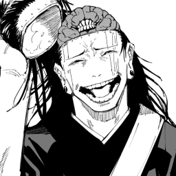
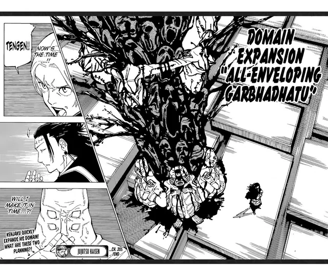

Historia
Kenjaku era um feiticeiro que sobreviveu mais de 1000 anos por causa de sua tecnica que permite que ele vai de um corpo para outro
Tecnica
A tecnica do Kenjaku é o transplante de cérebro, que faz com que ele roube o corpo do usuario e sua tecnica
Expansão de Dominio: Prufusão de Útero
A expansão do Kenjako é descrito que é como uma arvore com varias cabeças e um acerto garantido que esmaga o oponente com sua gravidade
